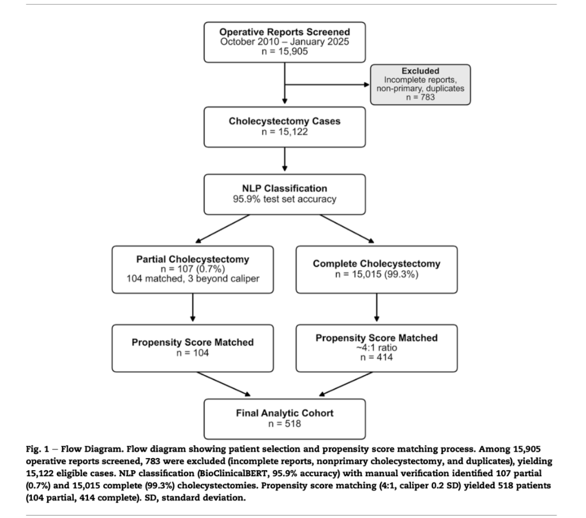
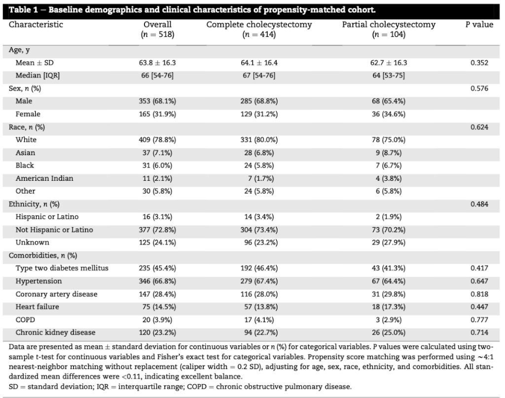
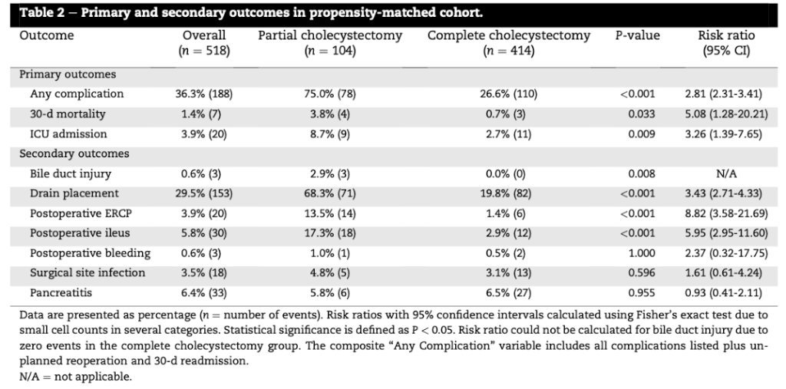
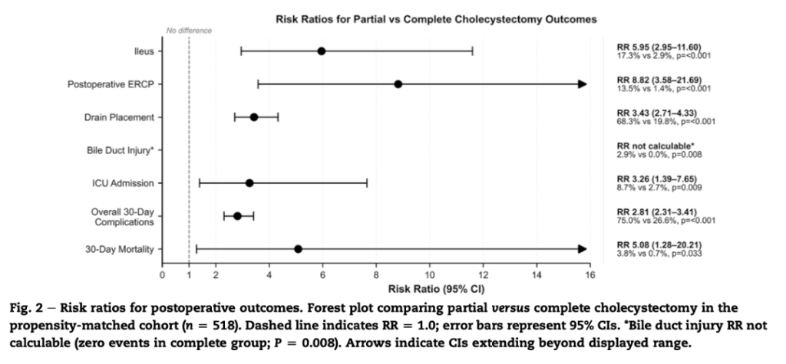
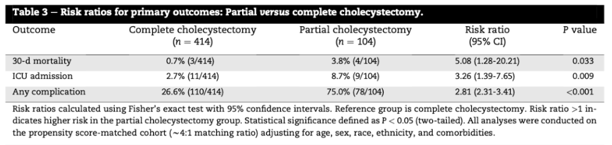

Partial vs. Complete Cholecystectomy: A Propensity-Matched Reality Check
An NLP analysis of 15,000+ cases reveals 5x higher mortality and 3x higher complication rates for partial cholecystectomies. A vital bailout, but at what cost?
The "difficult gallbladder" remains one of the most treacherous encounters in general surgery. When faced with severe inflammation, gangrenous necrosis, dense fibrotic scarring, or Mirizzi syndrome that obliterates anatomical landmarks and obscures the Critical View of Safety (CVS), proceeding with standard total cholecystectomy is a setup for catastrophe. Under these hostile conditions, the dissection of Calot’s triangle carries an unacceptable risk of major vasculobiliary injury.
To avoid severing the common bile duct or right hepatic artery, surgical dogma and society guidelines (e.g., SAGES Safe Cholecystectomy Program and the Tokyo Guidelines 2018) dictate a vital fallback maneuver: the partial (subtotal) cholecystectomy. By dividing the gallbladder body and leaving the posterior wall adherent to the liver bed, the surgeon successfully escapes the "zone of attrition."
However, this crucial bailout is not a consequence-free escape hatch. It exchanges a potential intraoperative catastrophe for a highly complex postoperative course. A landmark study in the Journal of Surgical Research by Nigam et al. utilizes Natural Language Processing (NLP) to cut through coding ambiguities, providing a rigorous, propensity-score-matched look at just how significant this postoperative morbidity actually is.
Surgical Mechanics: Subtotal Fenestrating vs. Reconstituting
Before diving into the clinical data, it is critical to distinguish between the two primary techniques of subtotal cholecystectomy, as they lead to vastly different complications:
- Subtotal Fenestrating Cholecystectomy: The surgeon cuts open the gallbladder body, evacuates all gallstones, and leaves the gallbladder remnant fully open. The mucosa of the remaining gallbladder wall is typically ablated (using electrocautery or argon plasma coagulation), and a closed-suction drain is placed in the subhepatic space.
- Clinical Trade-off: This method is associated with a significantly higher rate of postoperative low-grade or high-grade bile leaks (often requiring ERCP and stenting) but carries a negligible risk of long-term recurrent cholecystitis or stone formation, as no closed cavity remains.
- Subtotal Reconstituting Cholecystectomy: The gallbladder body is similarly divided and stones are evacuated, but the surgeon subsequently sutures or staples the lower gallbladder remnant closed, effectively creating a "neogallbladder."
- Clinical Trade-off: While this approach significantly minimizes immediate postoperative bile leaks, it leaves a closed cavity lined with functioning mucosa. Over months or years, this neogallbladder is prone to mucus secretion, stone recurrence, and recurrent acute cholecystitis, often necessitating a highly challenging completion cholecystectomy.
The Methodology: Leveraging NLP and Propensity Matching
Because clinical registries lack specific ICD-10 or CPT billing codes to accurately differentiate partial from complete cholecystectomies, historical data on subtotal outcomes has been highly fractured and prone to underreporting. To solve this, the researchers deployed a validated BioClinicalBERT NLP classifier to screen over 15,905 operative reports across 14 hospitals from October 2010 to January 2025.
This machine-learning model achieved an outstanding 95.9% test set accuracy, identifying 107 partial cholecystectomies. To control for the massive selection bias inherent to these cases—since partial cholecystectomies are exclusively performed on sicker patients with extreme local pathology—they utilized a rigorous propensity score matching algorithm (~4:1 ratio) based on age, sex, race, ethnicity, and a wide array of active comorbidities (including diabetes, hypertension, coronary artery disease, heart failure, COPD, and chronic kidney disease). The final matched analytic cohort consisted of 518 patients (104 partial and 414 complete).

The demographics in Table 1 highlight the success of the propensity score matching. Confounders such as age (mean ~63 years), sex (predominantly male at ~68%), and high-risk comorbidities—including Type 2 Diabetes (~41-46%), Hypertension (~64-67%), Coronary Artery Disease (~28-30%), and Chronic Kidney Disease (~23-25%)—were perfectly balanced between the partial and complete groups (all P-values > 0.05). This statistical alignment ensures that the observed differences in clinical outcomes are directly attributable to the surgical pathology and the intervention itself, rather than baseline patient frailty.
| Characteristic | Overall (n = 518) | Complete Cholecystectomy (n = 414) | Partial Cholecystectomy (n = 104) | P value ? |
|---|---|---|---|---|
| Age, y | ||||
| Mean ± SD | 63.8 ± 16.3 | 64.1 ± 16.4 | 62.7 ± 16.3 | 0.352 Balanced |
| Median [IQR] | 66 [54-76] | 67 [54-76] | 64 [53-75] | — |
| Sex, n (%) | ||||
| Male | 353 (68.1%) | 285 (68.8%) | 68 (65.4%) | 0.576 Balanced |
| Female | 165 (31.9%) | 129 (31.2%) | 36 (34.6%) | |
| Race, n (%) | ||||
| White | 409 (78.8%) | 331 (80.0%) | 78 (75.0%) | 0.624 Balanced |
| Asian | 37 (7.1%) | 28 (6.8%) | 9 (8.7%) | |
| Black | 31 (6.0%) | 24 (5.8%) | 7 (6.7%) | |
| American Indian | 11 (2.1%) | 7 (1.7%) | 4 (3.8%) | |
| Other | 30 (5.8%) | 24 (5.8%) | 6 (5.8%) | |
| Ethnicity, n (%) | ||||
| Hispanic or Latino | 16 (3.1%) | 14 (3.4%) | 2 (1.9%) | 0.484 Balanced |
| Not Hispanic or Latino | 377 (72.8%) | 304 (73.4%) | 73 (70.2%) | |
| Unknown | 125 (24.1%) | 96 (23.2%) | 29 (27.9%) | |
| Comorbidities, n (%) | ||||
| Type two diabetes mellitus | 235 (45.4%) | 192 (46.4%) | 43 (41.3%) | 0.417 Balanced |
| Hypertension | 346 (66.8%) | 279 (67.4%) | 67 (64.4%) | 0.647 Balanced |
| Coronary artery disease | 147 (28.4%) | 116 (28.0%) | 31 (29.8%) | 0.818 Balanced |
| Heart failure | 75 (14.5%) | 57 (13.8%) | 18 (17.3%) | 0.447 Balanced |
| COPD | 20 (3.9%) | 17 (4.1%) | 3 (2.9%) | 0.777 Balanced |
| Chronic kidney disease | 120 (23.2%) | 94 (22.7%) | 26 (25.0%) | 0.714 Balanced |

The Outcomes: A Deep Dive into Biliary Morbidity
The propensity-matched outcomes were sobering. Even after mathematically neutralizing patient-level systemic confounders, the partial cholecystectomy cohort experienced drastically elevated complication rates across almost all metrics. The data strongly suggests that the severe local inflammatory microenvironment that prompts a partial cholecystectomy is itself an independent driver of profound postoperative morbidity.
Primary Outcomes (Table 3 & Table 2)
- 30-Day Mortality: A highly concerning 3.8% (4/104) in the partial group vs. 0.7% (3/414) in the complete group. This represents a five-fold (5.08x) increase in mortality (P = 0.033). This severe finding highlights that the clinical scenario requiring subtotal cholecystectomy is highly dangerous.
- Overall Complications: An astronomical 75.0% (78/104) in the partial group compared to 26.6% (110/414) in the complete group (P < 0.001). This represents a nearly three-fold (2.81x) increase in the overall hazard of complications.
- ICU Admission: A rate of 8.7% (9/104) vs. 2.7% (11/414), marking a 3.26x increase in critical care requirements (P = 0.009).
| Outcome | Overall (n = 518) | Partial Cholecystectomy (n = 104) | Complete Cholecystectomy (n = 414) | Risk Ratio (95% CI) | P value |
|---|---|---|---|---|---|
| Primary Outcomes | |||||
| Any complication | 36.3% (188) | 75.0% (78) | 26.6% (110) | 2.81 (2.31-3.41) | <0.001 |
| 30-d mortality | 1.4% (7) | 3.8% (4) | 0.7% (3) | 5.08 (1.28-20.21) | 0.033 |
| ICU admission | 3.9% (20) | 8.7% (9) | 2.7% (11) | 3.26 (1.39-7.65) | 0.009 |
| Secondary Outcomes | |||||
| Bile duct injury | 0.6% (3) | 2.9% (3) | 0.0% (0) | N/A ? | 0.008 |
| Drain placement | 29.5% (153) | 68.3% (71) | 19.8% (82) | 3.43 (2.71-4.33) | <0.001 |
| Postoperative ERCP | 3.9% (20) | 13.5% (14) | 1.4% (6) | 8.82 (3.58-21.69) | <0.001 |
| Postoperative ileus | 5.8% (30) | 17.3% (18) | 2.9% (12) | 5.95 (2.95-11.60) | <0.001 |
| Postoperative bleeding | 0.6% (3) | 1.0% (1) | 0.5% (2) | 2.37 (0.32-17.75) | 1.000 |
| Surgical site infection | 3.5% (18) | 4.8% (5) | 3.1% (13) | 1.61 (0.61-4.24) | 0.596 |
| Pancreatitis | 6.4% (33) | 5.8% (6) | 6.5% (27) | 0.93 (0.41-2.11) | 0.955 |

Secondary Outcomes and Biliary Interventions (Figure 2)
A granular look at the secondary endpoints reveals the exact clinical drivers behind the elevated morbidity in subtotal cholecystectomy cases:
- Postoperative ERCP (RR 8.82, P < 0.001): A staggering 13.5% (14/104) of partial cholecystectomy patients required a postoperative endoscopic retrograde cholangiopancreatography, compared to only 1.4% of total cholecystectomy patients. Biliary stenting is frequently required to manage persistent bile leaks from the gallbladder bed or the cystic duct remnant, which are highly common in subtotal fenestrating procedures.
- Drain Placement (RR 3.43, P < 0.001): Closed-suction drains were left in 68.3% (71/104) of subtotal cases vs. 19.8% of total cases. Drains are left to proactively control the high rate of expected postoperative biliary leaks.
- Postoperative Ileus (RR 5.95, P < 0.001): A rate of 17.3% (18/104) vs. 2.9% (12/414). The extensive local tissue dissection and localized chemical peritonitis (caused by bile and inflammatory exudates) lead to prolonged bowel paralysis.
- Bile Duct Injury (BDI) (P = 0.008): Crucially, there were 3 cases of BDI (2.9%) in the subtotal group, compared to 0 cases (0.0%) in the matched complete group. This finding is of immense clinical significance. While subtotal cholecystectomy is specifically performed as a bailout to avoid BDI, the rate remains 2.9% because the severe inflammation and anatomical distortion that prompted the subtotal are highly dangerous, increasing BDI risk even when attempting to halt dissection.
17.3% vs 2.9% | P < 0.001
13.5% vs 1.4% | P < 0.001
68.3% vs 19.8% | P < 0.001
2.9% vs 0.0%
8.7% vs 2.7% | P = 0.009
75.0% vs 26.6% | P < 0.001
3.8% vs 0.7% | P = 0.033

| Outcome | Complete Cholecystectomy (n = 414) | Partial Cholecystectomy (n = 104) | Risk Ratio (95% CI) | P value |
|---|---|---|---|---|
| 30-d mortality | 0.7% (3/414) | 3.8% (4/104) | 5.08 (1.28-20.21) | 0.033 |
| ICU admission | 2.7% (11/414) | 8.7% (9/104) | 3.26 (1.39-7.65) | 0.009 |
| Any complication | 26.6% (110/414) | 75.0% (78/104) | 2.81 (2.31-3.41) | <0.001 |
Risk ratios calculated using Fisher's exact test with 95% confidence intervals. Reference group is complete cholecystectomy. Risk ratio > 1 indicates higher risk in the partial cholecystectomy group. Statistical significance defined as P < 0.05 (two-tailed). All analyses were conducted on the propensity score-matched cohort (~4:1 matching ratio) adjusting for age, sex, race, ethnicity, and comorbidities.

Clinical Synthesis: Deciding to Bailout
The core clinical puzzle of this data lies in the paradox of the Bile Duct Injury (BDI) rate. Subtotal cholecystectomy is specifically designed as the ultimate escape hatch to avoid devastating Strasberg Class E vasculobiliary injuries when inflammation obliterates Calot's triangle. Yet, even in this propensity-matched dataset, the BDI rate was 2.9% in the subtotal group vs. 0.0% in the total group.
This does not mean that subtotal cholecystectomy is a failure. Rather, it indicates that the local inflammatory microenvironment (characterized by gangrenous tissue, woody induration, or dense fibrotic remodeling) is highly treacherous. By the time a surgeon decides to convert to a subtotal cholecystectomy, they are already navigating a highly complex anatomical scenario. Halting the dissection and transitioning to a subtotal procedure is a protective measure that likely prevents a far worse, complex biliary reconstruction.
However, the significant risk of postoperative bile leak (13.5% requiring ERCP) and the five-fold higher 30-day mortality emphasize that partial cholecystectomy is a marker of a highly perilous clinical scenario. This has major implications for clinical practice:
- Explicit Preoperative Counseling: When consenting patients for a cholecystectomy—especially those presenting with acute cholecystitis, Mirizzi syndrome, or risk factors for a difficult gallbladder—surgeons must explicitly counsel patients on the possibility of a partial cholecystectomy. Patients must understand that should a subtotal procedure be required, their postoperative risk of bile leaks, drain retention, ERCP interventions, and intensive care requirements increases significantly.
- Early Bailout Decisions: SAGES guidelines advocate for early recognition of the difficult gallbladder. Continuing dissection in the "zone of attrition" when landmarks are obscured is a leading cause of BDI. Turning to a subtotal cholecystectomy early—rather than as a desperate last resort after structural damage has already occurred—is crucial.
- Remnant Management: When bailing out, the surgeon should carefully consider the anatomy. If a subtotal fenestrating approach is chosen, the cystic duct orifice should be closed internally if possible, and a drain is mandatory. If a reconstituting approach is utilized, the surgeon must be aware of the long-term risk of recurrent gallstones and neogallbladder cholecystitis.
Surgical Insight: Editorial Analysis & Literary Synthesis
The most striking statistical revelation in the Nigam et al. study is the 2.9% Bile Duct Injury (BDI) rate within the subtotal cohort, contrasted against 0.0% in the complete cholecystectomy group. Academically, this seems paradoxical: why would a bailout procedure specifically designed to prevent structural biliary damage exhibit a higher rate of injury?
The answer lies in the cognitive trap of the sunk cost fallacy in the operating room. Surgeons frequently engage in prolonged, forceful dissection within a scarred Calot's triangle, attempting to achieve a total cholecystectomy at all costs. Only after structural injury has occurred or is highly imminent do they "bail out" to a subtotal procedure. This 2.9% rate is not an indictment of the subtotal technique itself, but rather a warning against delayed conversion. Transitioning to a subtotal cholecystectomy must be a proactive, planned choice rather than a desperate, reactive retreat.
Furthermore, the choice between fenestrating and reconstituting should be guided by local tissue friability. Suture closure of an inflamed, necrotic gallbladder neck in a reconstituting approach is a common point of failure, leading to tissue tearing, necrosis, and subsequent uncontrolled high-grade leaks. In a highly hostile local environment, the fenestrating approach—leaving the remnant open, securing the internal orifice if possible, and placing an abundant subhepatic closed-suction drain—remains the safer, more robust surgical strategy.
How the Evidence Compares to Global Literature
To contextualize these findings, we must synthesize Nigam et al.’s results with other landmark surgical papers and clinical trials investigating subtotal outcomes:
- The Elshaer et al. Systematic Review (2015): Analyzing 2,984 subtotal cholecystectomies across 30 studies (PubMed Reference), Elshaer and colleagues reported an overall postoperative bile leak rate of 17.5% and a BDI rate of 0.08%. While the bile leak rates are highly congruent with Nigam's (13.5%), Nigam’s observed BDI rate of 2.9% is significantly higher. This discrepancy highlights the clinical strength of Nigam’s NLP methodology: by mining raw operative reports across a multi-hospital health network rather than relying on self-reported single-center registries, they successfully captured real-world complications that are typically lost to registry coding errors or selection bias.
- The Duke University Series by Lidsky et al. (2019): This series of 190 subtotal cases (PubMed Reference) focused heavily on the long-term recurrence of biliary events. Lidsky et al. found that reconstituting subtotal cholecystectomy carried a four-fold higher rate of recurrent biliary events (stones, cholecystitis, and the need for Completion Cholecystectomy at ~17%) compared to the fenestrating approach. This strongly reinforces that reconstituting subtotals, by leaving a closed "neogallbladder" cavity, represents a temporizing measure rather than a definitive cure.
- Tokyo Guidelines 2018 (TG18) for Acute Cholecystitis: The TG18 biliary pathway (UMN Study Link) specifically endorses subtotal cholecystectomy for Grade III (Severe) Acute Cholecystitis when local inflammation is extreme and organ dysfunction is present, recommending it as the primary surgical alternative to open conversion. The Nigam et al. propensity score-matched data validates this pathway, showing that while subtotal procedures avoid catastrophic BDI, patients still require close postoperative care due to their 3.3x higher ICU admission rate (8.7% vs 2.7%, P = 0.009).
| Study / Guideline | Cohort Size | Bile Leak Rate | Completion Rate | Bile Duct Injury | Core Biliary Takeaway |
|---|---|---|---|---|---|
| Nigam et al. (2026) Current NLP Study |
n = 104 (matched) | 13.5% | — (Not analyzed) | 2.9% | Real-world NLP captures high local complexity; 5x mortality (3.8%) represents unmeasured intraoperative severity. |
| Elshaer et al. (2015) Systematic Review |
n = 2,984 | 17.5% | 4.1% | 0.08% | Subtotal is a safe BDI bailout but carries a high rate of expected minor biliary complications (leaks). |
| Lidsky et al. (2019) Duke Univ. Series |
n = 190 | 18.0% | 17.0% (reconstitution) | 1.6% | Reconstituting subtotals carry a massive risk of "neogallbladder" gallstones, requiring completion surgery. |
| Tokyo Guidelines (TG18) Society Consensus |
Expert Consensus | — | — | — | Strongly endorses subtotal cholecystectomy as the first-line bailout in Grade II and III acute cholecystitis. |
Read the Full Publication
For full details on the NLP methodology, complete data tables, and in-depth discussion, review the original article.
View on Experts@Minnesota